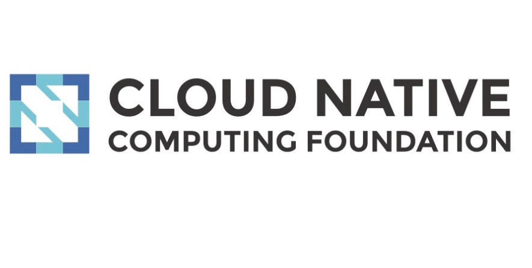

Black lives matter.
We stand in solidarity with the Black community.
Racism is unacceptable.
It conflicts with the core values of the Kubernetes project and our community does not tolerate it.
Kubernetes also known as K8s, is an open-source system for automating deployment, scaling, and management of containerized applications.
it groups containers that make up an application into logical units for easy management and discovery.Kubernetes builds upon15 years of experience of running production workloads at Google, combined with best-of-breed ideas and practices from the community.


Designed on the same principles that allows Google to run billions of containers a week, Kubernetes can scale without increasing your ops team.
Whether testing locally or running a global enterprise, Kubernetes flexibility grows with you to deliver your applications consistently and easily no matter how complex your need is.

kubernetes is open source giving you the freedom to take advantage of on-premises, hybrid, or public cloud infrastructure, letting you effortlessly move workloads to where it matters to you.
By Sarah Wells, Technical Director for Operations and Reliability, Financial Times

Automated rollouts and rollbacks
Kubernetes progressively rolls out changes to your application or its configuration, while monitoring application health to ensure it doesn't kill all your instances at the same time. If something goes wrong, Kubernetes will rollback the change for you. Take advantage of a growing ecosystem of deployment solutions.
Service discovery and load balancing
No need to modify your application to use an unfamiliar service discovery mechanism. Kubernetes gives Pods their own IP addresses and a single DNS name for a set of Pods, and can load-balance across them.
Service Topology
Routing of service traffic based upon cluster topology.
Storage orchestration
Automatically mount the storage system of your choice, whether from local storage, a public cloud provider such as GCP or AWS, or a network storage system such as NFS, iSCSI, Gluster, Ceph, Cinder, or Flocker.
Secret and configuration management
Deploy and update secrets and application configuration without rebuilding your image and without exposing secrets in your stack configuration.
Automatic bin packing
Automatically places containers based on their resource requirements and other constraints, while not sacrificing availability. Mix critical and best-effort workloads in order to drive up utilization and save even more resources.
Batch execution
In addition to services, Kubernetes can manage your batch and CI workloads, replacing containers that fail, if desired.
IPv4/IPv6 dual-stack
Allocation of IPv4 and IPv6 addresses to Pods and Services
Horizontal scaling
Scale your application up and down with a simple command, with a UI, or automatically based on CPU usage.
Self Healing
Restarts containers that fail, replaces and reschedules containers when nodes die, kills containers that don't respond to your user-defined health check, and doesn't advertise them to clients until they are ready to
Case studies
"Kubernetes is a great platform for machine learning because it comes with all the scheduling and …"
Read more
"Kubernetes is a great solution for us. It allows us to rapidly iterate on our clients' demands. "
Read more
"We realized that we needed to learn Kubernetes better in order to fully use the potential of it. At …"
Read more
"We made the right decisions at the right time. Kubernetes and the cloud native technologies are now …"
Read more
Case studies
We are a CNCF graduated project
Interested in receiving the latest Kubernetes news? Sign up for KubeWeekly.